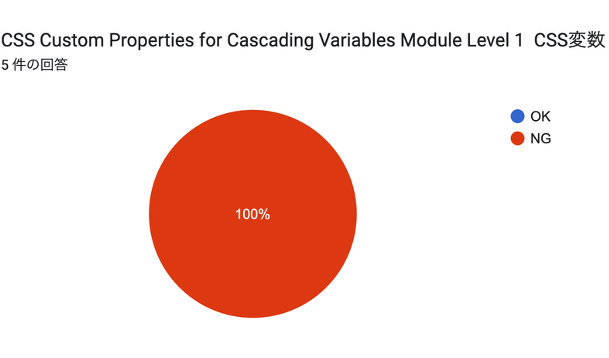
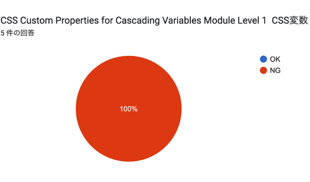

『EPUBリーダー表示テスト』の発刊

- （デモ）
あの電子書籍リーダーの
表示性能が知りたい!
電子書籍『EPUBリーダー表示テスト』活用術
小形克宏（次世代パブリッシング研究会）
2025年11月25日
Advanced Publishing Lab.（APL）＋日本電子出版協会（JEPA）共催セミナー
趣旨：このテストは、電子書店・アプリケーション等におけるEPUBリーダーの性能調査を目的に、次世代パブリッシング研究会が実施するテストです。
応募資格：『EPUBリーダー表示テスト』（次世代パブリッシング研究会、ポット出版、2025年、110円）を実際に購入した上で、正確に、そして誠実に回答してくださる方なら、どなたでも応募できます（ニックネーム可）。なお、明らかにイタズラあるいは妨害と認められる回答は主催者が削除することを、あらかじめご了承ください。
第1回期限：2025年3月31日
テストの手順
参考：テスト内容を解説した書籍、『EPUBリーダー表示テスト正解集』（次世代パブリッシング研究会、2025年、ポット出版、2,300円）を参照するとテストがやり易いでしょう

unicode-range 記述子とorphans / widows プロパティの未サポート

unicode-range , orphans / widowsとアクセシビリティ| CSS要素 | 関連するWCAG達成基準 | EPUB A11Y 1.1における役割 |
|---|---|---|
1. unicode-range 記述子 |
1.1.1 (非テキストコンテンツ) | 【情報保障】 コンテンツ内の特殊な文字が欠落せず表示されることを保証し、文字化けを防ぐ。 |
2. orphans / widows プロパティ |
1.4.8 (視覚的提示) | 【認知負荷の軽減】 段落の不自然な分断を防ぐことで、読者の視覚的な追従負担を減らし、可読性を高める。 |
 

| CSS要素 | 関連するWCAG達成基準 | EPUB A11Y 1.1における役割 |
|---|---|---|
3. 論理プロパティ (例: padding-block) |
1.3.1 (情報及び関係性) | 【構造的適応性】 物理的指定から論理的指定へ移行することで、縦書き・横書きのどちらでも一貫した構造と余白を維持する。 |
| 4. CSS変数 (Custom Properties) | 1.4.3 (コントラスト) / 1.4.8 (視覚的提示) | 【テーマの柔軟性】 ハイコントラストやフォントサイズ調整など、ユーザーによるテーマの一括切り替えを容易にし、ユーザースタイルを尊重する。 |